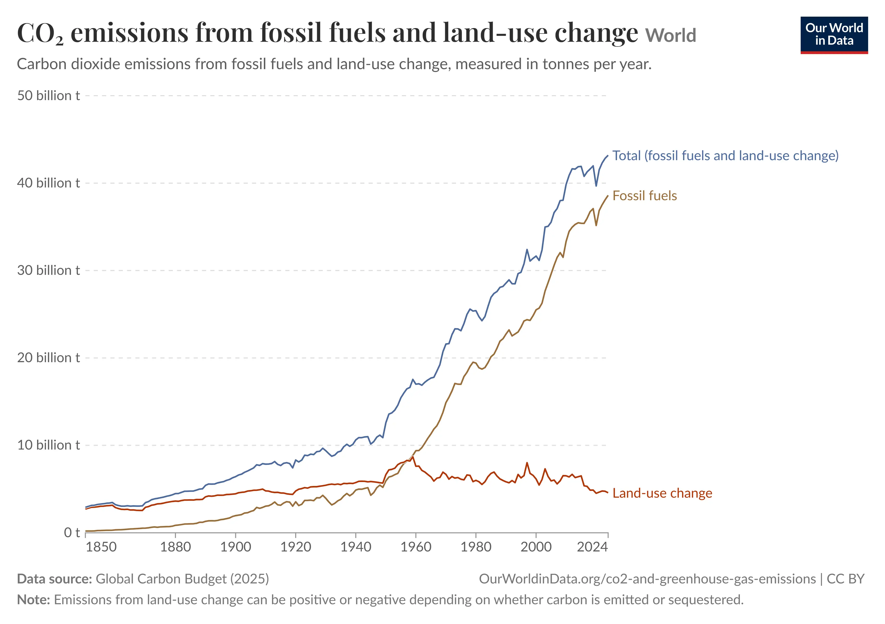
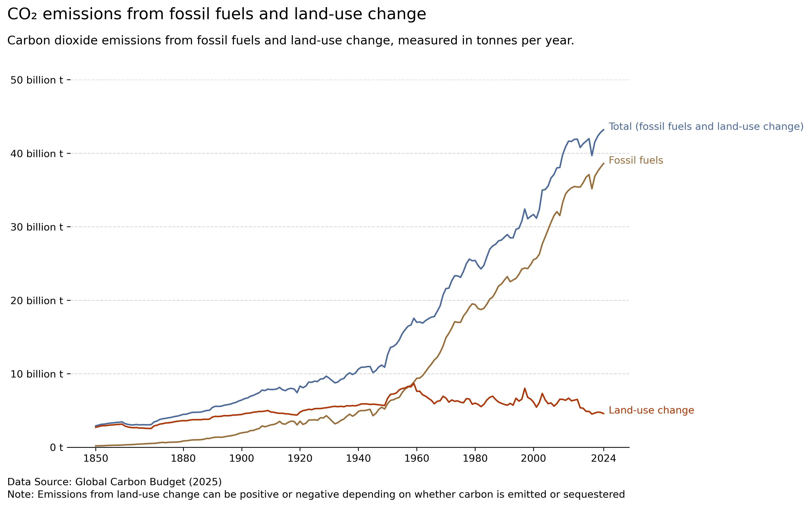
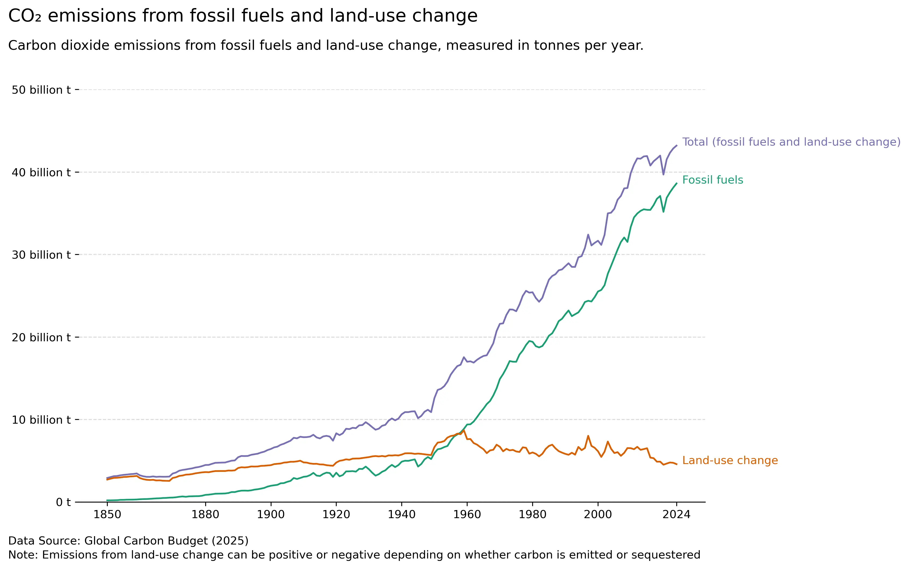

Learning from a Master 28/8/2026

Ritchie, H., & Roser, M. (2026, June). CO₂ emissions from fossil fuels and land-use change. Our World in Data. https://ourworldindata.org/grapher/co2-fossil-plus-land-use
I imported the data and examined it with pandas. I started off with a basic 3 line subplot graph. Next I adjusted the axis to match the original. Next I used Paint to colour match the colours used in the master data visualisation. I also added the horizontal grid lines in the background and remove the borders from the graph. Next i added the floating annotations for each line. Next up was adding the titles and subtitles for the data visualisation, spent lots of time tweaking the spacing to get it to match. Last thing to do was to switch the colour palette, I used ColourBrewer for this.
My rendition

My coloured rendition

Acknowledgement of generative "AI" use
I used ChatGPT (OpenAI, 2026) in Module 5 to help troubleshoot my python code, specifically the annotation where I had a misplaced bracket.